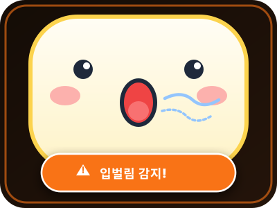

모니터 위에
가볍게 얹어두는
나만의 자세 & 호흡 AI 코치
컴퓨터에 몰입하는 순간 무의식적으로 발생하는 거북목(Forward Head Posture)과 구강 호흡(Mouth Breathing) 습관. 몸에 아무것도 걸치지 않는 독립 Vision NPU가 실시간 감지하여, 귀여운 디스플레이 캐릭터 표정으로 다정하게 바른 자세와 코호흡을 이끌어줍니다.

※ 위 수치는 PRD v1.0에서 정의한 목표 지표이며, 실측 결과가 아닙니다.
왜 기존 자세 교정 제품들은
결국 지속되지 못했을까요?
피부에 닿는 답답함이나 불안한 웹캠 감시 없이, 편안하고 자연스럽게 집중을 돕는 독립형 에지 AI 코치의 차이를 소개합니다.
단순 고정 타이머 앱
사용자 실제 신체 상태와 무관하게 정해진 주기로 작동하여 실제 불량 자세가 일어난 순간을 교정하지 못하고 작업 몰입만 방해합니다.
착용형(Wearable) 센서
목이나 어깨에 장비를 직접 부착해야 하여 이물감과 착용 피로도가 크며, 턱관절과 구강 구조에 영향을 주는 '입벌림'은 감지할 수 없습니다.
PC 소프트웨어형 웹캠 분석
PC CPU/GPU 자원을 크게 점유하여 발열/렉을 유발하고, 사용자 영상이 소프트웨어를 타면서 사생활 노출 우려가 항상 뒤따릅니다.
현대인의 두 가지 습관을 실시간으로 포착
장시간 화면을 볼 때 무의식적으로 나타나는 ‘경추 전방 돌출(거북목)’과 ‘구강 호흡(입벌림)’을 실시간으로 감지합니다.
Forward Head Posture (거북목 실시간 교정)
고개가 앞으로 쏠린 상태가 오래 이어지면 경추와 어깨에 부담이 쌓이고 만성 통증으로 이어질 수 있습니다. 내장 AI 엔진은 상체 랜드마크로 3D 자세를 추정해 귀와 어깨선의 각도를 실시간으로 추적합니다.

Mouth Aspect Ratio (입벌림 & 구강 호흡 차단)
업무나 게임에 깊이 몰입할 때 턱 근육이 풀리며 나타나는 무의식적 입벌림은 구강 건조와 턱관절 부담으로 이어질 수 있습니다. Face Mesh 입술 랜드마크 비율(MAR)을 통해 멍하니 벌어진 입을 감지합니다.

2.0인치 디스플레이 3단 실시간 반응 화면
바른 자세, 거북목, 입벌림 상태에 따라 LCD 화면이 이렇게 바뀝니다.

PRD 기반 6단계 사용자 시나리오 및 작동 원리
센서 착용 없이, 3초 캘리브레이션만 마치면 자동으로 코칭이 시작됩니다.
- 1 거치 · USB 연결
- 2 3초 중립 자세 영점
- 3 실시간 NPU 분석
- 불량 습관 3초 이상 지속?
단말기 거치 & USB 연결
모니터 상단이나 책상 위에 두고 USB 케이블을 연결합니다. UVC + HID 복합 프로토콜로 플러그앤플레이를 지원하며, 설치 가이드가 화각 맞추기를 도와줍니다.
3초 중립 자세 영점 조절
사용자가 정면을 바라보며 바른 자세를 3초간 유지하면, 개인별 체형과 모니터 높이에 맞춘 경추 각도 및 입 닫힘 기준점을 자동 수집합니다.
온디바이스 NPU 실시간 분석
Rockchip RV1106 내장 0.5 TOPs NPU가 초당 30프레임으로 얼굴 Face Mesh와 상반신 관절 좌표를 독립 추론합니다 (추론 부하는 기기 NPU가 담당).
3초 지속 시 LCD 캐릭터 경고
거북목(예: 경추 15° 이상) 또는 입벌림(MAR)이 3초 이상 지속되면 2.0" LCD에 캐릭터 경고 그래픽을 바로 띄웁니다.
사용자 자가 교정 및 복귀
디스플레이의 반응을 인지한 사용자가 턱을 당기거나 입을 다물면, 화면이 즉시 정상 응원 캐릭터로 부드럽게 전환됩니다.
로컬 DB 자동 통계 기록
불량 유지 시간과 교정 횟수 로그가 PC 컴패니언 앱 로컬 SQLite에만 안전하게 기록되어 일/주/월별 개선 추이를 확인합니다.
PRD 기준 하드웨어 & 엣지 AI 아키텍처
초저전력 Vision NPU와 프라이버시를 우선한 독립형 하드웨어 설계 명세입니다.
설정은 쉽게, 기록은 내 PC에만
PC 컴패니언 앱이 캘리브레이션을 안내하고, 자세 통계를 로컬 SQLite에 저장해 일·주·월별 리포트로 보여줍니다.
캘리브레이션 · 중립 자세 영점
완료되면 개인별 경추 각도와 입 닫힘 기준값이 기기에 저장됩니다.
일간 자세 리포트
React / Chart.js로 일·주·월별 추이를 시각화하며, 데이터는 로컬 DB 밖으로 나가지 않습니다.
목과 입, 두 가지에 집중합니다
범위를 좁혀 정확도와 안정성에 집중합니다. PRD v1.0이 정의한 개발 범위와 제외 범위입니다.
개발 범위 (In Scope)
-
실시간 거북목 감지귀-어깨-척추 관절 3D 포즈 추정으로 Forward Head Posture를 실시간 측정
-
실시간 입벌림 감지Face Mesh 랜드마크 기반 구강 개폐 비율(MAR) 산출 및 감지
-
온디바이스 LCD 그래픽 제어정상 · 거북목 · 입벌림 상태별 만화 캐릭터 피드백 출력
-
PC 설치 가이드 & 캘리브레이션 앱화각 조정, 중립 자세 영점 조절, 튜토리얼 가이드 프로그램
-
USB HID/UVC 복합 통신설정값 전달 및 포즈 상태 로그 송수신 파이프라인
-
로컬 데이터 저장 & 대시보드로컬 DB 연동과 사용자 통계 리포트 화면
-
환경 보정 알고리즘역광·조명 변화에도 랜드마크 추적이 끊기지 않도록 노출 자동 조절
개발 제외 범위 (Out of Scope)
-
음성 인식 · 음성 알림시각 피드백 중심 (마이크/스피커 미사용)
-
모바일 앱 (iOS/Android)PC 데스크 환경에 집중
-
클라우드 서버 연동 · AI 추론모든 영상 처리·추론은 디바이스 내부에서 완결
-
전신 자세 교정허리·골반·어깨 불균형 등 목과 입 이외의 추적 제외
-
다국어 · 기업용 멀티 계정단일 사용자 전용 PC 컴패니언 소프트웨어
-
무선 통신 · 배터리Bluetooth/Wi-Fi, 내장 배터리 없음 (USB 유선 전용)
PRD 정의 6대 성능 목표 지표
개발 완료 시점에 검증할 합격 기준입니다. 실측 결과가 아니라 PRD v1.0이 정의한 목표 수치입니다.
정사각·사각 측면 구도 기준으로 경추 전방 돌출을 판별하는 것을 목표로 합니다.
입술 랜드마크 비(MAR)를 기반으로 미세한 구강 개폐를 판별하는 것을 목표로 합니다.
카메라 영상 수집부터 LCD 화면 전환까지 100ms 이내 반응을 목표로 합니다.
대화나 음료 섭취 같은 일시적 개폐 동작을 불량 습관과 구분하는 것을 목표로 합니다.
캐릭터 알림 발생 후 5초 이내에 사용자가 바른 자세로 복귀하는 비율의 목표입니다.
8시간 연속 가동 기준 프레임 드랍률 1% 이하를 목표로 합니다.
비즈니스 생산성 및 건강 경제학적 가치
불량 자세로 인한 불편과 집중력 저하를 줄여 조직과 개인의 생산성에 기여하는 것을 목표로 합니다.
임직원 100인 사무 조직 기준 경제성 평가 (가상 시나리오)
※ 가상의 B2B 도입 시나리오이며, 모든 금액은 PRD의 가정 값입니다. 실제 효과를 보장하지 않습니다.
3초 이상 지속될 때만 알려 불필요한 방해는 줄이고, 굳어지기 쉬운 자세 습관은 놓치지 않습니다.
친근한 캐릭터 화면으로 거부감 없이 스스로 바른 자세와 코호흡으로 돌아오도록 돕습니다.
추론은 기기 내부에서 이뤄지고, 정량 통계 데이터만 PC 로컬 DB에 기록되며 클라우드로 전송되지 않습니다.